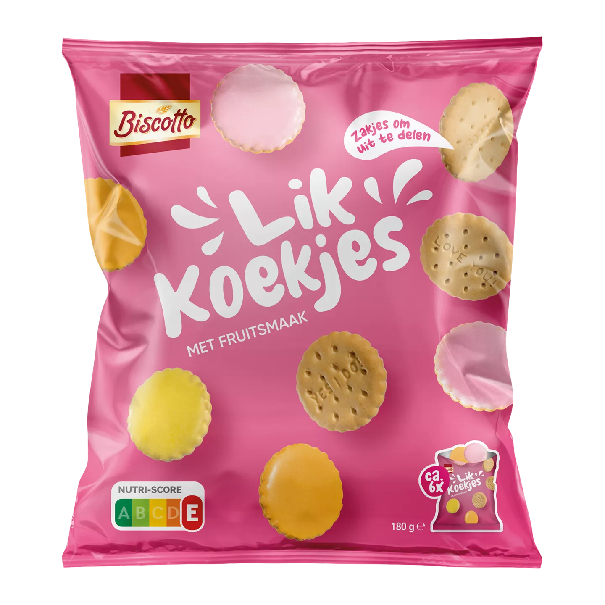

Er gaat weinig boven een koekje dat net uit de oven komt. De randjes zijn krokant, het midden nog zacht, en de chocolade is nog niet helemaal gestold. De keuken ruikt naar boter en bruine suiker, en je brandt bijna je vingers omdat je niet kunt wachten.
Ook simpele koekjes hebben hun charme. Een speculaasje bij de koffie, een stroopwafel die je even boven je kopje laat hangen tot de siroop zacht wordt. Klein, vertrouwd, en precies genoeg.
Wat voor koekjes hebben wij allemaa?
- Vieze koekjes
- Lekkere koekjes
- Koekjes uit Breda
